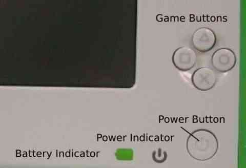

| Remplacer la batterie | Index | Guide de diagnostic des problèmes |
Attention : TOUT ce qui se trouve sur votre XO sera effacé si vous utilisez un périphérique de stockage USB et la méthode ci-dessous afin de réinitialiser votre mémoire flash.
Avec une connexion à Internet, vous pouvez préparer vous-même à reflasher (restaurer) les paramètres d'usine par défaut de votre XO. Cette procédure est appelée "installation propre" et est décrite plus en détail sur http://wiki.laptop.org/go/Clean-install_procedure. (Les mises à jour de logiciel peuvent se faire lors d'une installation propre ou par d'autres moyens).
L'installation propre fonctionne en reformatant totalement votre XO avec une image du logiciel stockée sur un dispositif de stockage USB.
Vous aurez besoin :
Vous pourrez alors copier les deux fichiers téléchargés sur votre périphérique de stockage USB. Après cela, le processus de restauration prendra environ dix minutes.
1. Téléchargez l'image OS et son fichier "fs.zip" sur votre ordinateur local. Il s'agit de fichiers compressés, NE LES OUVREZ PAS. A la place, via votre navigateurs, allez visiter les deux pages suivantes et suivez leurs instructions :
2. Copiez les fichiers qui en proviennent sur votre dispositif de stockage USB "propre" (c'est-à-dire un dispositif formaté FAT ou FAT32, pas un dispositif formaté en mode rapide).
3. Enlevez le dispositif de stockage USB et débranchez-le de votre ordinateur une fois certain d'avoir terminé correctement la procédure.
Vous êtes maintenant prêt à réinitialiser vous-même les paramètres d'usine par défaut.
1. Eteignez votre XO.
2. Connectez votre périphérique de stockage USB au XO.
3. Maintenez appuyées les quatre touches gamepad qui se trouvent en dessus du bouton de mise en route, puis démarrez votre XO.  Vous verrez alors apparaître le message "Release the game key to continue". Ne continuez pas tant que vous n'aurez pas vu ce message.
4. Relâchez les touches Jeu. Le processus de réinstallation sera automatiquement lancé. Vous verrez d'abord une grille se colorer progressivement avec l'avancement de la mise à jour, puis le XO affichera "Rebooting in 10 seconds..." Le XO redémarrera alors avec une nouvelle image.
5. Entrez votre nom puis cliquez sur "Next" (Suivant)
6. Cliquez sur l'icône XO pour modifier les couleurs puis cliquez sur "Done" (Fait).
7. En option, vous pouvez connecter votre XO à Internet puis utiliser le Panneau de Contrôle afin de télécharger les dernières Activités.
Si vous voyez apparaître le message "Bad hash at eblock #0" lorsque vous réinitialisez votre XO, cela signifie que l'image que vous avez copiée sur votre dispositif de stockage USB est corrompue. Vous devrez alors répéter l'étape de préparation, éventuellement avec un autre dispositif de stockage USB, puis réessayer l'étape de réinstallation.
Lorsque vous vous serez familiarisé avec la procédure ci-dessus, vous pourrez décider de modifier, mettre à jour, revenir à une version antérieure ou même remplacer, tout le système d'exploitation. Il existe différentes façons de le faire, vous pourrez toutes les trouver sur http://wiki.laptop.org/go/Change_your_OS. Certaines de ces procédures (comme la mise à jour avec la commande olpc-update) peuvent permettre une meilleure utilisation du réseau et être facilement annulées.
| Remplacer la batterie | Index | Guide de diagnostic des problèmes |